Na úplném zaèátku projektu jsme byli postaveni pøed rozhodnutí, jakım zpùsobem se budou øešit vıpoèty pozic objektù ve høe. Z nìkolika mo�nıch pøístupù jsme vybrali vıpoèty na základì fyzikálních zákonù. Toto rozhodnutí nám pøineslo na jedné stranì vıhodu realistické interakce objektù ve scénì, na druhé stranì urèité problémy. Tyto problémy èase vyvolaly nìkolik zásadních zmìn v samotném návrhu celého projektu.
Jak u� jsme v úvodu zmínili, naše první kroky smìøovaly k pokusu o implementaci vlastního fyzikálního enginu. Po nastudování pøíslušné dokumentace byl vytvoøen návrh fyzikálního modulu. Ten je v podstatì toto�nı s tím, co obsahuje v souèasnosti. Pozdìji byly odstranìny pouze èásti tıkající se kolizí objektù a samotného vıpoètu, materiály byly vyèlenìny zvláš�. V prùbìhu prací jsme došli k závìru, �e doba potøebná na implementaci takto rozsáhlého øešení je mnohem delší, ne� jsme pùvodnì pøedpokládali.
Navíc jsme si nemohli bıt jisti tím, �e tento pøístup bude správnì a pøedevším dostateènì rychle pracovat. Zpo�dìní na fyzikálním modulu se vyvolalo kaskádovı efekt a postupnì se pøeneslo i na další projekty závislé na fyzice a ty se také zaèínaly opo�ïovat. V této dobì jsme tak museli rozhodnout o tom, kterım smìrem se náš projekt bude nadále ubírat. K dispozici jsme mìli dvì mo�nosti - zmìnit pohled na fyzkální model nebo vyu�ít nìjakı hotovı fyzikální engine.
I pøes rizika spojená s pou�itím cizího øešení jsme se rozhodli pro druhou mo�nost. Prošli jsme nìkolik dostupnıch fyzikálních enginù. Nakonec jsme se rozhodli pro fyzikální engine Newton Game DynamicsTM.
Newton Game DynamicsTM (dále jen NGD). Stránky tvùrcù: www.newtondynamics.com
V této sekci se budeme zabıvat lehkım seznámením s enginem, s tím jak probíhala jeho integrace a s problémy spojenımi s pou�íváním tohoto enginu. NGD je vcelku vyspìlı fyzikální engine. Pro náš projekt byly obzvláštì zajímavé tyto schopnosti:
Pøi integraci NGD enginu jsme museli provést nìkolik zmìn v našem dosavadním návrhu. Kosmetickımi úpravami se zde nebudeme zabıvat. Mezi nejvıznamnìjší zmìny patøi pøechod k pou�ívání transformaèních matic v grafice a síti a vytvoøení zvláštní materiálové tøídy. V pùvodním návrhu grafickı modul pracoval tak, �e nastavoval pozice a rotace objektù pøímo pomocí vektorù a úhlù. S pøíchodem NGD bylo nutno pøejít k pou�ívání transformaèních matic. Èást grafického enginu musela bıt patøiènì upravena. Podobnımi zmìnami jako grafickı modul musela projít také daná èást sí�ového modulu starající se o pøenost tìchto dat. Nutno poznamenat, �e v tomto pøípadì šlo spíše o drobnosti. Druhá vıznamná zmìna se tıkala materiálù. Pro jejich pou�ití musela bıt vytvoøena nová tøída zajiš�ující jejich správnou funkènost.
Pøechod na NGD nepøinesl jenom klady. Objevilo se také nìkolik velmi nepøíjemnıch komplikací. Z mo�ností nabízenıch NGD jsme museli vybrat jak budeme reprezentovat objekty ve scénì - pøesnìji øeèeno jejich kolizní obálky. U dynamickıch objektù a aut padla volba na pou�ívání konvexních obálek (Convex Hull Collisions). Pro statické objekty a terén byly vybrány obálky pro tvorbu slo�itìjších statickıch objektù (Tree Collision). Asi nejvíce èasu jsme strávili s pokusy pøimìt obálky Tree Collision fungovat. Hlavním problém bylo propadávání objektù - zde nedocházelo k vzájemné interakci obálek, pøípadnì nefungovala v�dy správnì. Hledáním pøíèiny této chyby jsme strávili pomìrnì znaèné mno�tví èasu. Nakonec jsme uspìli na stránkách oficiálního fóra www.newtondynamics.com/forum/. Šlo o správné poøadí zadávání vrcholù - proti smìru hodinovıch ruèièek. O této malièkosti se ovšem autoøi v dokumentaci zapomnìli zmínit.
S propadáváním objektù "z neznámé pøíèiny" jsme se museli vypoøádat ještì jednou pøi zmìnách mìøítka objektù. Pøi pou�ití odpovídající transformaèní matice sice došlo ke správné zmìnì mìøítka u kolizní obálky, objekt však s ostatními objekty neinteragoval. V takovém pøípadì se musela nejdøíve zmìnit velikost celé kolizní obálky u� pøi její tvorbì. Dále se pou�ívala transformaèní matice bez zmìny mìøítka - objekt u� mìl potøebnou velikost. Grafickı engine potom tuto matici v pøípadì potøeby pøenásobil zleva maticí mìnící mìøítko.
Nìkolik nepøíjemností bylo spojeno s pou�íváním starší verze enginu. Zde šlo pøedevším o potí�e s obálkou terénu (o tom se podrobnìji pojednává v sekci zabıvající se terénem) a modulem pro tvorbu aut. Auta byla velmi nestabilní, maximální hmotnost byla maximálnì 100 kg, kola èasto propadávala terénem. Nová verze enginu vyøešila vìtšinu tìchto problémù. Stále však èas od èasu dochází ke špatnım kolizím kol.
Smyslem tohoto oddílu není pøesnı popis všech souèástí, spíše se jedná o vıèet vìcí, které pova�ujeme z programátorského hlediska za nejvıznamnìjší. Pøípadné zájemce o detailnìjší popis bychom odkázali na manuál dodávanı s enginem (ten je mo�né sehnat na stránkách autorù www.newtondynamics.com), pøípadnì na oficiální fórum www.newtondynamics.com/forum/ (odkud jsme èerpali informace také my).
NewtonWorld je hlavní struktura v enginu NGD. NewtonWorld pøedstavuje svìt z pohledu NGD, v jeho rámci pak probíhají vıpoèty. Všechny další novì vytvoøené struktury pøísluší nìjakému svìtu.
Vyu�ití struktury NewtonCollision spoèívá v reprezentaci kolizních obálky pou�ívanıch enginem NGD. NGD umo�òuje tvorbu nìkolika typù obálek - konvexní obálky, obálky pro statické objekty a u�ivatelem definované obálky. My jsme pou�ívali první dva typy.
Konvexní obálka se v NGD pou�ívá na dynamické objekty. V našem pøípadì jsme zvolili mo�nost vytvoøení konvexní obálky na základì skupiny vrcholù.
Tree Collision pøedstavuje preferovanı zpùsob tvorby kolizní obálky pro statické objekty. Tvorba probíhá pøidáváním polygonù. U objektù, které pou�ívají tento typ obálky, je ignorována hmotnost ve všech dynamickıch vıpoètech.
Struktura NewtonBody reprezentuje tìlesa, na kterıch se provádìjí fyzikální vıpoèty. Pøi tvorbì je takovému tìlesu pøiøazena kolizní obálka. NewtonBody umo�òuje provádìt velké mno�ství operací napø. manipulace se silami a momenty sil.
Klouby (spojení tìles) jsou v enginu NGD tvoøeny pomocí struktury NewtonJoint. My jsme vyu�ili typ spojení v modulu pro tvorbu aut.
Materiály jsou v enginu NGD simulovány pomocí grafu, kde vrcholy jsou jednotlivé materiály. Hrana mezi dvìma vrcholy pøedstavuje pár materiálù - struktura NewtonMaterial. Takto je umo�nìno nastavovat rùzné vlastnosti od pru�nosti po koeficienty tøení.
V této èásti dokumentace se budeme vìnovat celkovému pohledu na fyzikální engine pou�itı ve høe. Popíšeme si vìci, ze kterıch se skládá fyzikální scéna, to jak fungují materiály a podíváme se na dìje spojené s inicializací a samotnım prùbìhem simulace. V závìru se budeme zabıvat vnitøním objektovım návrhem fyzikálního modulu.
Fyzikální scéna se skládá z nìkolika èástí. Nachází se zde statické a dynamické objekty. Dalším dùle�itım prvkem ve scénì je terén. Terén se skládá z jednoho velkého, pøípadnì skupiny statickıch objektù - oba pøístupy je mo�né pou�ít. Posledním prvkem figurujícím ve fyzikální scénì jsou vozidla. Jedná se o speciální dynamickı objekt skládající se z karoserie, kol a motoru.
Objekty ve høe rozlišujeme na dva druhy - statické a dynamické. Existuje hned nìkolik dùvodu, proè je bylo nutné rozlišit. Dva hlavní dùvody jsou odlišnı zpùsob tvorby kolizní obálky a sní�ení vıpoèetní nároènosti fyzikální scény.
Statické objekty ve scénì zastupují nehybné objekty. Ve høe plní rùzné funkce - od pøeká�ek na je�dìní (looping, rùzné rampy, klopené zatáèky) a� po doplòkové objekty (billboardy, lampy). U�ivateli zde byla ponechána znaèná volnost v tom, jaké objekty do hry umístí. Objektùm je také mo�né pøiøadit nìkterı z u�ivatelem vytvoøenıch materiálù. V pøípadì, �e �ádnı materiál není nastaven pou�ije se základní materiál zabudovanı ve høe.
Z pohledu fyzikálního enginu je statickı objekt tvoøen kolizní obálkou, jeho� hmotnost je ignorována ve všech vıpoètech. Tato obálka je nejèastìji vytvoøena na základì modelu tìlesa, které má reprezentovat. Tvorba kolizní obálky probíhá po jednotlivıch polygonech - to je dáno díky vlastnostem NGD (pou�ívá se obálka typu Tree Collision).
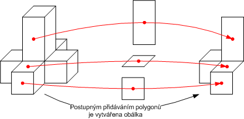
Obrázek 3.1: Tvorba kolizní obálky pro statické objekty
Jak u� bylo øeèeno døíve, u statickıch objektù se nebere v úvahu jejich hmotnost (proto ji není nutné uvádìt). Díky tomu jsou mnohem ménì nároèné na vıpoèty. Navíc se pozice statickıch objektù urèuje pouze jednou pøi inicializaci nové hry. Tím nezatì�ují sí�ovou komunikace, proto�e se v prùbìhu simulace nepohybují.
Dynamické objekty se mohou v prùbìhu simulace pohybovat. Jejich funkce vìtšinou spoèívá v menších doplòkovıch objektech jako jsou rùzné ku�ely, barely nebo prkna. Podobnì jako u statickıch objektù i zde je rozhodnutí zcela na u�ivateli - a� u� jde o druh objektu nebo o materiál.
Pøi tvorbì kolizních obálek se dynamické objekty odlišují hned v nìkolika zále�itostech. Obálka je vytvoøena obvykle na základì modelu vygenerováním konvexního obalu (obálka typu Convex Hull Collision).
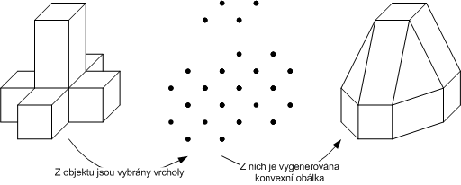
Obrázek 3.2: Tvorba kolizní obálky pro dynamické objekty
Zpracování velkého mno�ství dynamickıch objektù vıznamnì zpomaluje jak fyzkální vıpoèty tak sí�ovou komunikaci. Tyto problémy øeší jejich rozdìlení na dvì skupiny - aktivní a neaktivní. V praxi se to projevuje tak, �e v ka�dém kroku jsou do vıpoètu zahrnuty pouze aktivní objekty. Objekty v prùbìhu simulace pøecházejí mezi tìmito dvìma stavy. Neaktivní stav je dosa�en ustálením ve své poloze. Aktivaci mù�e zpùsobit kolize s pohybujícím se objektem. Zmìnu stavu je samozøejmì mo�né ovlivnit i manuálnì. Toto rozdìlení urychluje vıpoèet. U neaktivních objektù pak odpadá nutnost neustálého posílání pozic.
Terén je patrnì nejdùle�itìjší souèást našeho herního svìta. Veškeré dynamické objekty a vozidla témìø neustále kolidují s terénem. Budeme-li terén posuzovat z pohledu enginu NGD, jedná se o jeden velkı statickı objekt. Celı terén je slo�en ze skupiny ètvercovıch políèek o délce strany 1000 jednotek (pøi souèasném nastavení je to pøesnì 10 metrù). Tato jednotlivá políèka jsou tvoøena z pøedem vygenerovanıch terénních plátù.
Kolizní obálka terénu je zalo�ena na vıše zmínìnıch terénních plátech. Velikost obálky (mínìno co do poètu polygonù) se v prùbìhu projektu nìkolikrát mìnila. V první verzi byl terén vytvoøen najednou - tedy jeden velkı objekt. Ten vznikal tak, �e se postupnì procházela políèka na mapì. Pro ka�dé políèko byl nalezen pøíslušnı terénní plát a polygony, z kterıch se skládal, byly pøidány k obálce. V dùsledku pou�ívání starší verze knihovny enginu NGD docházelo k problémùm s pamìtí a souèasnì tvorba obálky mìla vìtší èasovou nároènost.
V dùsledku tìchto problémù došlo k pøepracování zpùsobu tvorby kolizní obálky. Pùvodní koncepce zalo�ená na jednom velké objektu byla zahozena a pøešlo se k pou�ívání menších kusù. Ka�dé políèko na mapì pøedstavovalo jeden statickı objekt - tj. mapa o velikosti 10 x 10 byla slo�ena ze 100 statickıch objektù ètvercového pùdorysu s délkou strany 10 metrù. Vytváøení kolizní obálky pro ka�dé políèko by zabralo pomìrnì hodnì èasu. Aby se pøedešlo podobnım problémùm, byly nejprve vytvoøeny obálky pro všechny typy terénních plátù pou�ívanıch v nahrávané mapì. V dalším kroku u� staèilo pouze vytváøet objekty a pøiøazovat k nim odpovídající kolizní obálky. Nevıhoda tohoto pøístupu spoèívala ve vyšších pamì�ovıch nárocích. Ty byly zpùsobeny vnitøní re�ií NGD.
Pøed poslední zmìna byla provedena na základì testování aut. Pøi jízdì docházelo k èastému poskakování právì v místì pøechodu mezi jednotlivımi objekty tvoøícími terén. Toto zjištìní si vy�ádalo pøepracování tvorby terénu. Mapa byla rozdìlena na nìkolik ètvercovıch oblastí - skupin terénních plátù. Tím se sní�il poèet pøechodù. Tvorba terénu probíhala procházením všech skupin v mapì a pøidáváním terénních plátù do kolizní obálky skupiny (viz obrázek). Tento zpùsob tvoøil jakısi kompromis mezi obìma døíve pou�itımi pøístupy.
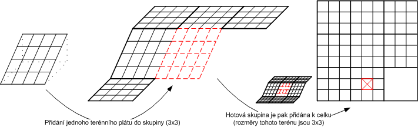
Obrázek 3.3: Zpùsob tvorby terénu pomocí skupin terénních plátù
Poslední verze knihovny NGD opravila mnoho problémù tıkajících se tvorby obálek statickıch objektù. Odpadly jak problémy s maximální velikostí obálky tak delší èasy pøi jejich tvorbì. Tyto zmìny umo�nily opìt pou�ívat pro terén jednu velkou kolizní obálku. Díky pou�ívání skupin terénních plátù v posledním návrhu nebylo nutné provádìt zmìny v algoritmu. Nyní probíhá tvorba terénu z jedné skupiny pokrıvající celou mapu.
Auta patøí mezi pohyblivé objekty ve fyzikální scénì - mají vìtšinu vlastností podobnıch jako dynamické objekty, souèasnì se odlišují v celé øadì vìcí. Geometrie vozidla se skládá ze dvou typù obálek - karoserie a kola. Karoserie s koly dr�í pohromadì speciální spoj s pru�inou. Tímto zpùsobem je mo�no simulovat tlumièe, které se pou�ívají ve skuteènıch automobilech. Obálky karoserie a kol spolu vzájemnì neinteragují. Vedle tìchto èástí obsahuje model auta ještì jeden objekt - motor. Z pohledu fyziky se jedná o èistì virtuální tìleso, které nezasahuje do fyzikálních vıpoètù, a jeho� jedinım úèelem je simulace základních funkcí skuteèného motoru.
Karoserii auta mù�eme zaøadit mezi dynamické objekty ve scénì. Obálka je vytvoøena na základì modelu karoserie vygenerováním konvexního obalu (obálka typu Convex Hull Collision). Vìtšinu parametrù urèujících nìkteré vlastosti dynamickıch objektù je nutné nastavit i v tomto pøípadì. Vozidla jsou na rozdíl od dynamickıch objektù obvykle po celou dobu vıpoètu v pohybu, proto bylo nutné zrušit schopnost vozidla pøecházet mezi aktivním a neaktivním stavem.
Kola vozidel jsou vytváøena automaticky enginem NGD na základì u�ivatelem zadanıch hodnot - šíøka a polomìr. Kolizní obálku vygeneruje engine a ta pak vyplòuje, pøípadnì lehce obaluje celé kolo. Podobnì jako karoserie i kola mù�eme pova�ovat za dynamické objekty, které jsou stále aktivní. Jak u� bylo øeèeno døíve, kola jsou pøipojená ke karoserii pomocí pru�in. Tyto pru�iny jsou popsány pomocí tìchto vlastností - délka, tuhost a útlum.
Upevnìní kol umo�òuje celou øadu pohybù. Jedním z nich je posuvnı pohyb podél osy definované pru�inou. Okolo této osy je rovnì� nastavováno zatoèení kol kvùli zmìnì smìru jízdy. Nastavování úhlù kol je zalo�ena na principu tzv. Ackermanova øízení. Jedná se o pøístup, kdy osy otáèení všech kol se protínají v jednom bodì - støedu otáèení. Tímto zpùsobem je mo�né dosáhnou lepších vlastností vozidel pøi zatáèení.
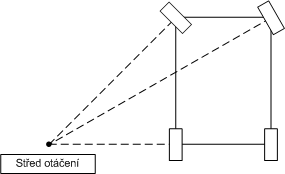
Obrázek 3.4: Princip Ackermanova øízení
Posledním pohybem kola je otáèení okolo osy kolmé na smìr jízdy a osu pru�iny. Kolo se kolem této osy mù�e volnì otáèet. Auto se uvádí do pohybu zvìtšováním momentu sil pùsobícím na kolo, obdobnım zpùsobem je vyvoláno br�dìní.
V naší høe je skuteènı model zastoupen vıraznì zjednodušenou verzí pracující na principu vyhledávání otáèek na vıkonové køivce. Pøi inicializace hry (závody) jsou z u�ivatelem nastavenıch hodnot zjištìny rychlostní stupnì a jednotlivé body vıkonové køivky. Vstupním parametrem pro urèení odpovídajícího momentu sil je úhlová rychlost kol. Ta je pøevedena na poèet otáèek motoru za minutu. Ka�dá nová hodnota je poupravena, pokud pøesahuje maximální a minimální otáèky motoru. Aby se pøedešlo velkım vıkyvùm otáèek motoru, je tato hodnota prùmìrována z nìkolika po sobì jdoucích. Ve vıkonové køivce se potom na základì otáèek motoru za minutu vyhledá odpovídajicí moment sil, kterı je aplikován na kola.
Pou�ívání materiálù vıraznì rozšiøuje mo�nosti fyzikálního enginu. Pøi troše experimentování lze docílit velmi zajímavıch vısledkù. Nejprve je nutné seznámit se s tím, jak k materiálùm pøistupuje engine NGD. Z jeho úhlu pohledu je to graf, kde vrcholy jsou jednotlivé typy materiálù. Vlastnosti - pru�nost, mìkkost, koeficienty statického a dynamického tøení a schopnost kolize (pøesnìji - zda dva pøedmìty nesoucí danou dvojici materiálù spolu kolidují, èi nikoliv) - se pak nastavují v�dy pro urèitı pár materiálù. V praxi to pak vypadá tak, �e se nejprve nastaví vlastnosti pro jeden základní materiál. To samé se potom provede s vybranımi páry dalších materiálù. Není nutné definovat všechny mo�né dvojice, dokonce není tøeba nastavit všechny vlastnosti. V takovém pøípadì je vyu�it základní materiál.
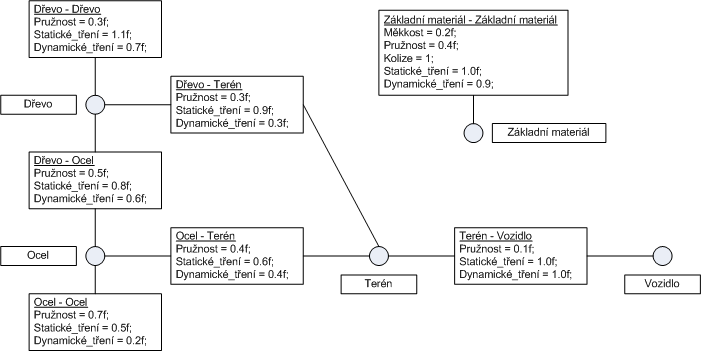
Obrázek 3.5: Materiály z pohledu fyzikálního enginu Newton Game DynamicsTM
Poslední vìc, kterou má NGD k dispozici pro práci s materiály, je mo�nost definování 3 obslu�nıch funkcí (nazvìme je collisionBegin(), processContact(), collisionEnd()). Zpùsob jejich pou�ívání je spojen s tím, jakım zpùsobem NGD zpracovává kolize. Pøi pøekrytí AABB obálek (osovì orientované obálky) dvou objektù se nejprve ovìøí, zda mezi nimi mù�e dojít ke kolizi. To zále�í na nastavení materiálù - kolize se mù�e zpracovat a nebo také zahodit. Pøi zpracování se nejdøíve zavolá collisionBegin(). V ní je mo�né rozhodnout o dalším pokraèování. V kladném pøípadì se provede vıpoèet, jsou nalezeny kontaktní body a na ka�dı je zavolána funkce processContact(). Po zpracování všech kontaktù NGD zavolá funkci collisionEnd() - tím je ukonèeno zpracování kolize. Na pøilo�eném diagramu je znázornìn prùbìh celého algoritmu.
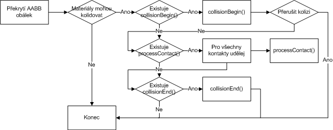
Obrázek 3.6: Prùbìh algoritmu, kterı zpracovává kolizi objektù
Náš pøístup k materiálùm je ponìkud odlišnı. Je zalo�en na 4 druzích materiálovıch typù, tabulce materiálù a materiálové mapì pro terén. Pøi startu aplikace je naèten soubor "Data\Physics\materials". Ten obsahuje seznam všech pou�itıch materiálù a u�ivatelem nadefinované kombinace rùznıch materiálù. Tato data se ulo�í do dvourozmìrné tabulky, kde ka�dé pole pøedstavuje kombinaci dvou materiálù. Pøi spuštìní hry je pro zadanou mapu vytvoøena materiálová mapa. Ka�dı terénní plát je pokryt fyzikální texturou o velikosti 10 x 10 polí tvoøenou indexy pou�ívanıch materiálù. Pøi naèítání objektù dojde k pøekrytí nìkterıch míst fyzikální texturou silnice.
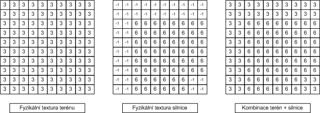
Obrázek 3.7: Pøíklad fyzikální textury terénu, silnice a jejich kombinace
V prùbìhu hry jsou pak vyu�ívány pouze 4 druhy materiálovıch typù - Základní, Auto, Objekt a Terén. Jejich název urèuje k jakému typu objektu ve scénì jsou pøiøazeny. Fyzikální vlastnosti mezi tìmito typy jsou definovány pouze na základním materiálovém typu. Typy se vzájemnì liší pouze ve funkcích zpracovávajících jednotlivé kontakty. Jde o funkce typu processContact(). My vyu�íváme 4 odlišné funkce (viz obrázek): Auto_Objekt_Kontakt, Auto_Terén_Kontakt, Objekt_Objekt_Kontakt a Objekt_Terén_Kontakt.
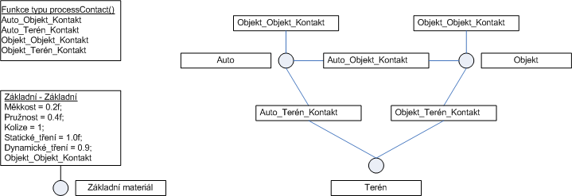
Obrázek 3.8: Graf materiálovıch typù a funkcí typu processContact()
Zpracování tìchto funkcí je zalo�eno na hledání v tabulce materiálù. Pøi neúspìchu jsou pou�ity hodnoty definované pro dvojici základních materiálù. V prùbìhu volání funkce jsou získány dva indexy. Zpùsob urèení indexu zále�í na materiálovém typu. Objekty mají jeden index, u aut se v�dy rozlišuje mezi karoserií a koly. Index pro terén se hledá v materiálové mapì. V pøípadì úspìchu jsou nastaveny nové vlastnosti platné pro kolidující dvojici materiálù. Na obrázku je znázornìno volání funkce Auto_Terén_Kontakt.
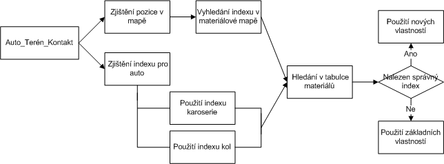
Obrázek 3.9: Zpùsob volání funkce Auto_Terén_Kontakt
Vıpoèet probíhá v rámci hlavní metody Update() tøídy CPhysics. Tato metoda je volána v serveru v metodì CServer::updateGame(). Pomocí parametru je dodán èasovı interval. Ten je zajištìn pomocí èasovaèe. Vše probíhá tak, �e se v�dy zjistí aktuální èas a ten se odeète od èasu zaèátku minulého vıpoètu. Jejich rozdíl je pøedán metodì CPhysics::Update(). Aktuální èas je ulo�en a je pou�it v dalším volání. Tento èasovaè zasílá pomìrnì velké èasové úseky (obèas i v øádu sekund). Proto je tento interval rozdìlen uvnitø metody CPhysics::Update() na vìtší poèet èasovıch úsekù stejné délky. Na ka�dı takovı úsek je zavolána funkce enginu NGD NewtonUpdate(). Tím je docíleno toho, �e vıpoèet fyziky probíhá stabilnì po krocích stejné délky.
Vıpoèet fyzikální simulace je zajiš�ován funkcí NewtonUpdate(). Ka�dé volání je rozdìleno do nìkolika fází. Nejdøíve probìhne detekce kolizí. Její prùbìh je podrobnìji popsán v sekci Materiály. Nalezené kolize jsou vyøešeny. V další fázi jsou na ka�dé aktivní tìleso aplikovány obslu�né funkce, které urèí jaké síly a momenty sil v daném kroku na tìlesa pùsobí. U dynamickıch objektù se jedná o gravitaèní sílu, u aut se k tomu pøidává napøíklad vıpoèet odporové síly vzduchu nebo vıpoèet vıkonové køivky motoru. Na základì tìchto nastavení jsou integrátorem spoèítány nové pozice objektù. Na pøilo�eném obrázku je znázornìn prùbìh volání obslu�né funkce pro auto.
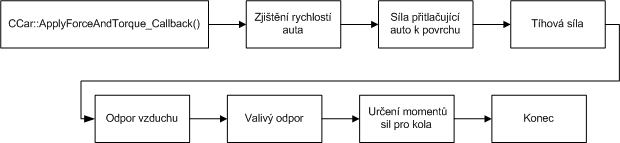
Obrázek 3.10: Prùbìh volání obslu�né funkce pro auto - CCar::ApplyForceAndTorque_Callback()
Pøi tvorbì aplikace jsme se potıkali s rùznımi problémy. A� u� šlo o propadávání objektù nebo špatné kolizní obálky, byl zde v�dy problém jak tyto vìci ladit. Jedinım mo�nım øešením bylo zavést zobrazování kolizních obálek všech objektù. jedná se èistì o ladicí informaci s její� pomocí si u�ivatel mù�e prohlédnout, jakım zpùsobem jsou ve fyzikální scénì reprezentovány objekty. Zobrazování kolizní geometrie se nenacházelo v pùvodních návrzích projektu a bylo pøidáno do ji� fungující aplikace. Vedlejším efektem je pomìrnì znaènı pokles vıkonu celé aplikace pøi jejich vykreslování. Pøi zpracování jednoho tìlesa zde dochází k prùchodu všech polygonù tvoøících obálku a k pøedání jeho vrcholù grafickému enginu. To zpùsobuje znaèné zpomalení, proto�e grafika nemá pøímı pøístup ke geometrii tìles.
Programovı modul fyziky tvoøí objektovou nádstavbu enginu NGD. Je slo�en z nìkolika tøíd, jejich� vzájemnı vztah je vidìt na pøilo�eném diagramu.
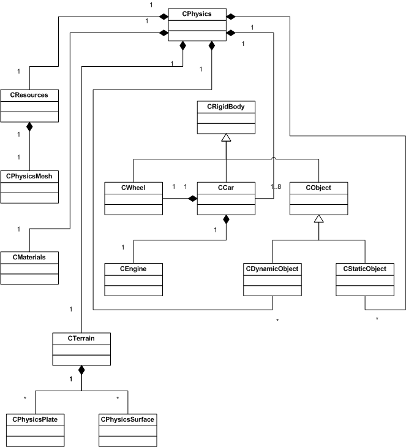
Obrázek 3.11: Vztahy mezi tøídami ve fyzikálním modulu